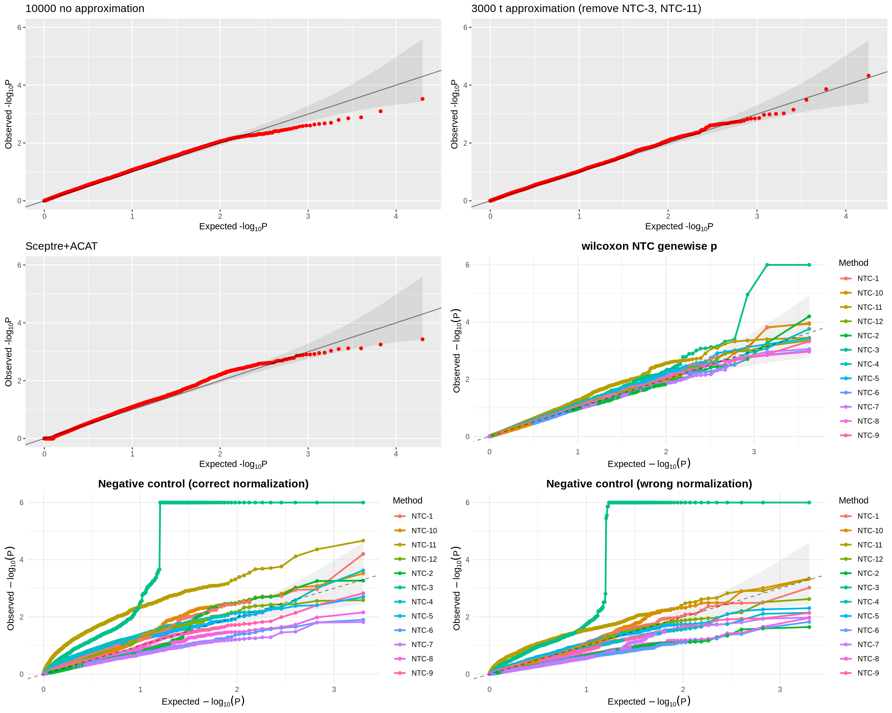
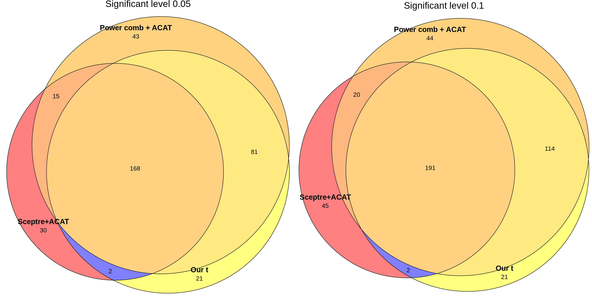
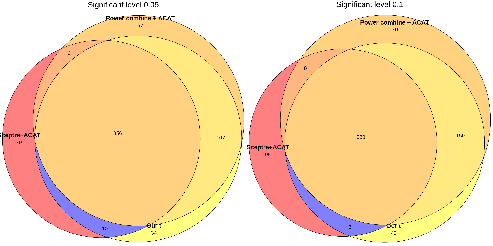

newest results
jliucx
2025-6-1
Last updated: 2025-07-22
Checks: 5 2
Knit directory: Getting_started/
This reproducible R Markdown analysis was created with workflowr (version 1.7.1.1). The Checks tab describes the reproducibility checks that were applied when the results were created. The Past versions tab lists the development history.
The R Markdown file has unstaged changes. To know which version of the R Markdown file created these results, you’ll want to first commit it to the Git repo. If you’re still working on the analysis, you can ignore this warning. When you’re finished, you can run wflow_publish to commit the R Markdown file and build the HTML.
Great job! The global environment was empty. Objects defined in the global environment can affect the analysis in your R Markdown file in unknown ways. For reproduciblity it’s best to always run the code in an empty environment.
The command set.seed(20240712) was run prior to running the code in the R Markdown file. Setting a seed ensures that any results that rely on randomness, e.g. subsampling or permutations, are reproducible.
Great job! Recording the operating system, R version, and package versions is critical for reproducibility.
Nice! There were no cached chunks for this analysis, so you can be confident that you successfully produced the results during this run.
Using absolute paths to the files within your workflowr project makes it difficult for you and others to run your code on a different machine. Change the absolute path(s) below to the suggested relative path(s) to make your code more reproducible.
| absolute | relative |
|---|---|
| /project/xuanyao/jiaming/Getting_started | . |
| /project/xuanyao/jiaming/Getting_started/data/Morris_adjusted/program_data/gene_module_index_matrix.rds | data/Morris_adjusted/program_data/gene_module_index_matrix.rds |
| /project/xuanyao/jiaming/Getting_started/data/Morris_adjusted/program_data/grna_target_data_frame.rds | data/Morris_adjusted/program_data/grna_target_data_frame.rds |
| /project/xuanyao/jiaming/Getting_started/data/Morris_adjusted/program_data/discovery_pairs_cis.rds | data/Morris_adjusted/program_data/discovery_pairs_cis.rds |
| /project/xuanyao/jiaming/Getting_started/output/snakemake/Morris_Hallmark/3000_t_ACAT_Morris_Hallmark_strong_gene_qc/p_values/geneset_p_value.rds | output/snakemake/Morris_Hallmark/3000_t_ACAT_Morris_Hallmark_strong_gene_qc/p_values/geneset_p_value.rds |
| /project/xuanyao/jiaming/Getting_started/output/Morris/sceptre_all_pairs/author_threshold_updated/results_run_discovery_analysis.rds | output/Morris/sceptre_all_pairs/author_threshold_updated/results_run_discovery_analysis.rds |
| /project/xuanyao/jiaming/Getting_started/data/Morris_adjusted/program_data_nature_cNMF/perturbation_gene_strong_qc_complete_gene.rds | data/Morris_adjusted/program_data_nature_cNMF/perturbation_gene_strong_qc_complete_gene.rds |
| /project/xuanyao/jiaming/Getting_started/output/snakemake/Morris_Hallmark/3000_normal_morris_HALLMARK_strong_gene_qc/p_values/geneset_p_value.rds | output/snakemake/Morris_Hallmark/3000_normal_morris_HALLMARK_strong_gene_qc/p_values/geneset_p_value.rds |
| /project/xuanyao/jiaming/Getting_started/output/snakemake/Morris_Hallmark/3000_t_morris_HALLMARK_strong_gene_qc/p_values/geneset_p_value.rds | output/snakemake/Morris_Hallmark/3000_t_morris_HALLMARK_strong_gene_qc/p_values/geneset_p_value.rds |
| /project/xuanyao/jiaming/Getting_started/data/Morris_adjusted/program_data/manually_created_gene_index_matrix.rds | data/Morris_adjusted/program_data/manually_created_gene_index_matrix.rds |
| /project/xuanyao/jiaming/Getting_started/output/Morris/sceptre_all_pairs/author_threshold_updated_full_NTC/results_run_calibration_check.rds | output/Morris/sceptre_all_pairs/author_threshold_updated_full_NTC/results_run_calibration_check.rds |
| /project/xuanyao/jiaming/Getting_started/output/snakemake/Morris_Hallmark/3000_t_morris_HALLMARK_strong_gene_qc/p_values/genewise_p_value.rds | output/snakemake/Morris_Hallmark/3000_t_morris_HALLMARK_strong_gene_qc/p_values/genewise_p_value.rds |
| /project/xuanyao/jiaming/Getting_started/output/snakemake/Morris_Hallmark/10000_no_morris_HALLMARK_strong_gene_qc_NTC/p_values/geneset_p_value.rds | output/snakemake/Morris_Hallmark/10000_no_morris_HALLMARK_strong_gene_qc_NTC/p_values/geneset_p_value.rds |
| /project/xuanyao/jiaming/Getting_started/output/snakemake/Morris_Hallmark/3000_t_morris_HALLMARK_strong_gene_qc_NTC/p_values/geneset_p_value.rds | output/snakemake/Morris_Hallmark/3000_t_morris_HALLMARK_strong_gene_qc_NTC/p_values/geneset_p_value.rds |
| /project/xuanyao/jiaming/Getting_started/output/snakemake/Morris_Hallmark/3000_t_morris_HALLMARK_strong_gene_qc_NTC_p2/p_values/genewise_p_value.rds | output/snakemake/Morris_Hallmark/3000_t_morris_HALLMARK_strong_gene_qc_NTC_p2/p_values/genewise_p_value.rds |
| /project/xuanyao/jiaming/Getting_started/output/snakemake/Morris_Hallmark/3000_t_morris_HALLMARK_strong_gene_qc_NTC_p2/p_values/geneset_p_value.rds | output/snakemake/Morris_Hallmark/3000_t_morris_HALLMARK_strong_gene_qc_NTC_p2/p_values/geneset_p_value.rds |
| /project/xuanyao/jiaming/Getting_started/output/snakemake/Morris_Hallmark/3000_t_morris_HALLMARK_strong_gene_qc_NTC_previous/p_values/geneset_p_value.rds | output/snakemake/Morris_Hallmark/3000_t_morris_HALLMARK_strong_gene_qc_NTC_previous/p_values/geneset_p_value.rds |
| /project/xuanyao/jiaming/Getting_started/data/Xie/program_data/gene_module_index_matrix.rds | data/Xie/program_data/gene_module_index_matrix.rds |
| /project/xuanyao/jiaming/Getting_started/data/Xie/program_data/grna_target_data_frame.rds | data/Xie/program_data/grna_target_data_frame.rds |
| /project/xuanyao/jiaming/Getting_started/data/Xie/program_data/discovery_pairs_cis.rds | data/Xie/program_data/discovery_pairs_cis.rds |
| /project/xuanyao/jiaming/Getting_started/output/snakemake/Xie_Hallmark/3000_t_Xie_HALLMARK_strong_gene_qc/p_values/geneset_p_value.rds | output/snakemake/Xie_Hallmark/3000_t_Xie_HALLMARK_strong_gene_qc/p_values/geneset_p_value.rds |
| /project/xuanyao/jiaming/Getting_started/output/Xie/sceptre/adj_crt_union_batch_threshold_4/results_run_discovery_analysis.rds | output/Xie/sceptre/adj_crt_union_batch_threshold_4/results_run_discovery_analysis.rds |
| /project/xuanyao/jiaming/Getting_started/data/Xie/Xie_perturbation_gene_qc.rds | data/Xie/Xie_perturbation_gene_qc.rds |
| /project/xuanyao/jiaming/Getting_started/data/Xie/program_data/gene_to_analyze_filtered.rds | data/Xie/program_data/gene_to_analyze_filtered.rds |
| /project/xuanyao/jiaming/Getting_started/output/snakemake/Xie_Hallmark/10000_no_Xie_HALLMARK_strong_gene_qc/p_values/geneset_p_value.rds | output/snakemake/Xie_Hallmark/10000_no_Xie_HALLMARK_strong_gene_qc/p_values/geneset_p_value.rds |
| /project/xuanyao/jiaming/Getting_started/output/snakemake/Xie_Hallmark/3000_t_ACAT_Xie_Hallmark_strong_gene_qc/p_values/geneset_p_value.rds | output/snakemake/Xie_Hallmark/3000_t_ACAT_Xie_Hallmark_strong_gene_qc/p_values/geneset_p_value.rds |
| /project/xuanyao/jiaming/Getting_started/data/Xie/program_data_cNMF/gene_module_index_matrix.rds | data/Xie/program_data_cNMF/gene_module_index_matrix.rds |
| /project/xuanyao/jiaming/Getting_started/data/Xie/program_data_cNMF/grna_target_data_frame.rds | data/Xie/program_data_cNMF/grna_target_data_frame.rds |
| /project/xuanyao/jiaming/Getting_started/data/Xie/program_data_cNMF/discovery_pairs_cis.rds | data/Xie/program_data_cNMF/discovery_pairs_cis.rds |
| /project/xuanyao/jiaming/Getting_started/output/snakemake/Xie_cNMF/3000_t_Xie_cNMF_strong_gene_qc/p_values/geneset_p_value.rds | output/snakemake/Xie_cNMF/3000_t_Xie_cNMF_strong_gene_qc/p_values/geneset_p_value.rds |
| /project/xuanyao/jiaming/Getting_started/output/Xie/sceptre/cNMF_threshold4/results_run_discovery_analysis.rds | output/Xie/sceptre/cNMF_threshold4/results_run_discovery_analysis.rds |
| /project/xuanyao/jiaming/Getting_started/output/snakemake/Xie_cNMF/3000_t_ACAT_Xie_cNMF_strong_gene_qc/p_values/geneset_p_value.rds | output/snakemake/Xie_cNMF/3000_t_ACAT_Xie_cNMF_strong_gene_qc/p_values/geneset_p_value.rds |
| /project/xuanyao/jiaming/Getting_started/output/snakemake/repologle/NTC_maxstat_10000_no/p_values/geneset_p_value.rds | output/snakemake/repologle/NTC_maxstat_10000_no/p_values/geneset_p_value.rds |
| /project/xuanyao/jiaming/Getting_started/output/snakemake/repologle/NTC_power_ACAT_10000_no/p_values/geneset_p_value.rds | output/snakemake/repologle/NTC_power_ACAT_10000_no/p_values/geneset_p_value.rds |
| /project/xuanyao/jiaming/Getting_started/output/repologle/permutation_a_subset_NTC/results_run_calibration_check.rds | output/repologle/permutation_a_subset_NTC/results_run_calibration_check.rds |
Great! You are using Git for version control. Tracking code development and connecting the code version to the results is critical for reproducibility.
The results in this page were generated with repository version f09f0e2. See the Past versions tab to see a history of the changes made to the R Markdown and HTML files.
Note that you need to be careful to ensure that all relevant files for the analysis have been committed to Git prior to generating the results (you can use wflow_publish or wflow_git_commit). workflowr only checks the R Markdown file, but you know if there are other scripts or data files that it depends on. Below is the status of the Git repository when the results were generated:
Ignored files:
Ignored: .Rhistory
Ignored: .Rproj.user/
Ignored: analysis/run.sh
Ignored: analysis/run_R.sh
Untracked files:
Untracked: .snakemake/
Untracked: Snakefile
Untracked: analysis/research_log_July.Rmd
Untracked: analysis/sceptre_singleton.R
Untracked: analysis/sceptre_singleton.Rmd
Untracked: analysis/sceptre_threshold.Rmd
Untracked: code/back_upfunctions_optimized.R
Untracked: code/crt_sample.cpp
Untracked: code/debug.Rmd
Untracked: code/draft.Rmd
Untracked: code/find_gene_set.Rmd
Untracked: code/fit_skew_normal.cpp
Untracked: code/functions_optimized.R
Untracked: code/general_data_optimized.R
Untracked: code/nature_data_edit.Rmd
Untracked: code/parallel/
Untracked: code/plots_generator.Rmd
Untracked: code/rcc_err/
Untracked: code/rcc_jobs/
Untracked: code/rcc_out/
Untracked: code/remove_cis_optimize.R
Untracked: code/run_R_caslake.sh
Untracked: code/sceptre/
Untracked: code/simulation.Rmd
Untracked: code/t_test.cpp
Untracked: code/utilizer/
Untracked: config/
Untracked: data/
Untracked: logs/
Untracked: output/Morris/
Untracked: output/Xie/
Untracked: output/debug/
Untracked: output/nature/
Untracked: output/newest/
Untracked: output/repologle/
Untracked: output/simulation/
Untracked: output/snakemake/
Untracked: run_snakemake.sh
Untracked: scripts/
Untracked: snake_program/
Untracked: snakemake_benchmarks/
Untracked: snakemake_profile/
Untracked: temp/
Unstaged changes:
Modified: analysis/new_model.Rmd
Deleted: analysis/reseach_log_May.Rmd
Modified: analysis/research_log.Rmd
Modified: analysis/research_log_June.Rmd
Modified: analysis/research_log_May.Rmd
Deleted: code/functions.R
Deleted: code/plot.Rmd
Modified: code/run_R.sh
Deleted: code/startover.R
Note that any generated files, e.g. HTML, png, CSS, etc., are not included in this status report because it is ok for generated content to have uncommitted changes.
These are the previous versions of the repository in which changes were made to the R Markdown (analysis/new_model.Rmd) and HTML (docs/new_model.html) files. If you’ve configured a remote Git repository (see ?wflow_git_remote), click on the hyperlinks in the table below to view the files as they were in that past version.
| File | Version | Author | Date | Message |
|---|---|---|---|---|
| html | 6d9232f | jliucx | 2025-07-10 | add system comparison of MVN |
| Rmd | 73c67bc | jliucx | 2025-04-25 | Remove deleted files |
| html | 057e25e | jliucx | 2025-01-22 | Build site. |
| Rmd | f59bee9 | jliucx | 2025-01-22 | remove cis |
| html | 91ea23f | jliucx | 2025-01-15 | Build site. |
| Rmd | a034075 | jliucx | 2025-01-15 | debug |
| html | 0eb9dac | jliucx | 2025-01-15 | Build site. |
| Rmd | 81985a1 | jliucx | 2025-01-15 | debug |
| html | a03004e | jliucx | 2025-01-07 | Build site. |
| Rmd | 1e10b4d | jliucx | 2025-01-07 | add skew normal approximation |
| html | b550e94 | jliucx | 2025-01-07 | Build site. |
| Rmd | e9e8971 | jliucx | 2025-01-07 | add skew normal approximation |
| html | d8d04ad | jliucx | 2025-01-07 | Build site. |
| Rmd | a9120fc | jliucx | 2025-01-07 | add skew normal approximation |
| html | d35cfca | jliucx | 2025-01-07 | Build site. |
| Rmd | 8a81d82 | jliucx | 2025-01-07 | add skew normal approximation |
| html | 95e4d20 | jliucx | 2024-12-28 | Build site. |
| Rmd | b775a9e | jliucx | 2024-12-28 | summary Dec 27 |
| html | b29945c | jliucx | 2024-12-28 | Build site. |
| Rmd | 2719fca | jliucx | 2024-12-28 | add covariate balancing check |
| html | 2412094 | jliucx | 2024-12-28 | Build site. |
| Rmd | 47bacfa | jliucx | 2024-12-28 | add detailed comparison plots of sceptre and t |
| html | 4cf0571 | jliucx | 2024-12-27 | Build site. |
| Rmd | 6e31fdf | jliucx | 2024-12-27 | add analysis of weird spike |
| html | 4f7d3da | jliucx | 2024-12-26 | Build site. |
| Rmd | 9fff849 | jliucx | 2024-12-26 | add analysis of weird spike |
| html | 2134663 | jliucx | 2024-12-26 | Build site. |
| Rmd | 8235664 | jliucx | 2024-12-26 | upload newest results |
| html | 2b3c456 | jliucx | 2024-12-26 | Build site. |
| Rmd | 0aab02a | jliucx | 2024-12-26 | upload newest results |
1 Morris - HALLMARK
I realized a bug in previous code: I didn’t correctly normalize the expression matrix. Therefore, I rerun all the dataset.
1.1 Strong perturbation - gene qc

1.2 NTC
p6<-gg_qqplot(as.vector(readRDS("/project/xuanyao/jiaming/Getting_started/output/snakemake/Morris_Hallmark/10000_no_morris_HALLMARK_strong_gene_qc_NTC/p_values/geneset_p_value.rds")[c(1:9,12),]),title="10000 no approximation")
p7<-gg_qqplot(as.vector(readRDS("/project/xuanyao/jiaming/Getting_started/output/snakemake/Morris_Hallmark/3000_t_morris_HALLMARK_strong_gene_qc_NTC/p_values/geneset_p_value.rds")[1:9,]), title="3000 t approximation (remove NTC-3, NTC-11)")
p8<-gg_qqplot(module_results_sceptre_NTC[module_results_sceptre_NTC$grna_id!="NTC-3"&module_results_sceptre_NTC$grna_id!="NTC-11",]$acat_pval, title="Sceptre+ACAT")
genewise_p_value <- readRDS("/project/xuanyao/jiaming/Getting_started/output/snakemake/Morris_Hallmark/3000_t_morris_HALLMARK_strong_gene_qc_NTC_p2/p_values/genewise_p_value.rds")
p9<-gg_qqplot_df((genewise_p_value), title="wilcoxon NTC genewise p")Warning: Using `size` aesthetic for lines was deprecated in ggplot2 3.4.0.
ℹ Please use `linewidth` instead.
This warning is displayed once every 8 hours.
Call `lifecycle::last_lifecycle_warnings()` to see where this warning was
generated.p1<-gg_qqplot_df((readRDS("/project/xuanyao/jiaming/Getting_started/output/snakemake/Morris_Hallmark/3000_t_morris_HALLMARK_strong_gene_qc_NTC_p2/p_values/geneset_p_value.rds")),title="Negative control (correct normalization)")
p2<-gg_qqplot_df((readRDS("/project/xuanyao/jiaming/Getting_started/output/snakemake/Morris_Hallmark/3000_t_morris_HALLMARK_strong_gene_qc_NTC_previous/p_values/geneset_p_value.rds")),title="Negative control (wrong normalization)")
grid.arrange(p6,p7,p8,p9,p1,p2,ncol=2)
p6<-gg_qqplot(as.vector(readRDS("/project/xuanyao/jiaming/Getting_started/output/snakemake/Morris_Hallmark/3000_t_ACAT_Morris_Hallmark_strong_gene_qc/p_values/geneset_p_value.rds")[c(189:191,192,193:197,208),]),title="power combination + ACAT (Remove NTC 3, 11)")
p7<-gg_qqplot(as.vector(readRDS("/project/xuanyao/jiaming/Getting_started/output/snakemake/Morris_Hallmark/3000_t_ACAT_Morris_Hallmark_strong_gene_qc/p_values/geneset_p_value.rds")[c(189:191,193:197,208),]),title="power combination + ACAT (Remove NTC 3, 5, 11)")
p8 <- gg_qqplot_df(readRDS("/project/xuanyao/jiaming/Getting_started/output/snakemake/Morris_Hallmark/3000_t_ACAT_Morris_Hallmark_strong_gene_qc/p_values/geneset_p_value.rds")[c(189:198,207,208),],title = "power combination + ACAT (All NTC)")
grid.arrange(p6,p7,p8,ncol=2)
2 Xie - HALLMARK
2.1 Strong perturbation - gene qc

2.2 NTC
p1<-gg_qqplot(as.vector(as.matrix(max_stat[519,])),title="Gene module p value NTC-1 (our method t)")
p2<-gg_qqplot(as.vector(as.matrix(max_stat[521,])),title="Gene module p value NTC-3 (our method t)")
p3<-gg_qqplot(as.vector(as.matrix(max_stat_3[519,])),title="Gene module p value NTC-1 (power comb + ACAT)")
p4<-gg_qqplot(as.vector(as.matrix(max_stat_3[521,])),title="Gene module p value NTC-3 (power comb + ACAT)")
grid.arrange(p1,p2,p3,p4,ncol=2)
3 Xie - cNMF set
max_stat <- as.data.frame(readRDS("/project/xuanyao/jiaming/Getting_started/output/snakemake/Xie_cNMF/3000_t_ACAT_Xie_cNMF_strong_gene_qc/p_values/geneset_p_value.rds"))
max_stat[max_stat==0]<- 1e-4
max_stat_long_2 <- max_stat%>%
rownames_to_column(var = "grna_id") %>% # Add row names as a column
pivot_longer(cols = -grna_id, names_to = "module", values_to = "p_value")
# Remove rows with NA p-values
max_stat_long_2 <- max_stat_long_2 %>% filter(!is.na(p_value))
max_stat_long_2 <- max_stat_long_2 %>%
semi_join(module_results_sceptre, by = c("grna_id", "module"))
max_stat_long_2$bh_pval <- p.adjust(max_stat_long_2$p_value, method = "BH")
max_stat_long_2$identifier <- paste(max_stat_long_2$grna_id, max_stat_long_2$module, sep = "_")
4 Repologle
4.1 Hallmark set
4.1.1 maxstat
geneset_p_value <- readRDS("/project/xuanyao/jiaming/Getting_started/output/snakemake/repologle/NTC_maxstat_10000_no/p_values/geneset_p_value.rds")
combined_mat<-geneset_p_value
ind <- which(matrixStats::rowMins(as.matrix(combined_mat)) < 0.0007)
rownames(combined_mat)<-paste0(1:nrow(combined_mat))
gg_qqplot_df(combined_mat)
4.1.2 powersum + acat
geneset_p_value <- readRDS("/project/xuanyao/jiaming/Getting_started/output/snakemake/repologle/NTC_power_ACAT_10000_no/p_values/geneset_p_value.rds")
combined_mat<-geneset_p_value
ind <- which(matrixStats::rowMins(as.matrix(combined_mat)) < 0.0007)
rownames(combined_mat)<-paste0(1:nrow(combined_mat))
gg_qqplot_df(combined_mat)
4.1.3 sceptre
names(grna_groups)<-1:length(grna_groups)
gg_qqplot_list(grna_groups)
sessionInfo()R version 4.1.0 (2021-05-18)
Platform: x86_64-pc-linux-gnu (64-bit)
Running under: CentOS Linux 8
Matrix products: default
BLAS/LAPACK: /software/openblas-0.3.13-el8-x86_64/lib/libopenblas_skylakexp-r0.3.13.so
locale:
[1] LC_CTYPE=en_US.UTF-8 LC_NUMERIC=C
[3] LC_TIME=en_US.UTF-8 LC_COLLATE=en_US.UTF-8
[5] LC_MONETARY=en_US.UTF-8 LC_MESSAGES=en_US.UTF-8
[7] LC_PAPER=en_US.UTF-8 LC_NAME=C
[9] LC_ADDRESS=C LC_TELEPHONE=C
[11] LC_MEASUREMENT=en_US.UTF-8 LC_IDENTIFICATION=C
attached base packages:
[1] parallel stats graphics grDevices utils datasets methods
[8] base
other attached packages:
[1] forcats_0.5.1 stringr_1.5.1 purrr_1.0.2
[4] tidyverse_1.3.1 speedglm_0.3-5 biglm_0.9-3
[7] DBI_1.2.3 MASS_7.3-60 ACAT_0.91
[10] eulerr_7.0.2 gridExtra_2.3 heavytailcombtest_1.0.0
[13] sgt_2.0 numDeriv_2016.8-1.1 optimx_2025-4.9
[16] peakRAM_1.0.2 BH_1.84.0-0 Matrix_1.6-3
[19] sceptredata_0.99.0 sceptre_0.10.0 presto_1.0.0
[22] data.table_1.14.8 Rcpp_1.0.12 tidyr_1.3.0
[25] tibble_3.2.1 readr_1.4.0 dplyr_1.1.4
[28] ggplot2_3.5.1
loaded via a namespace (and not attached):
[1] matrixStats_1.1.0 fs_1.6.3 lubridate_1.7.10 httr_1.4.2
[5] rprojroot_2.0.4 tools_4.1.0 backports_1.4.1 bslib_0.7.0
[9] utf8_1.2.1 R6_2.5.1 colorspace_2.1-0 withr_2.5.2
[13] tidyselect_1.2.0 compiler_4.1.0 git2r_0.32.0 rvest_1.0.0
[17] cli_3.6.1 xml2_1.3.2 labeling_0.4.3 sass_0.4.10
[21] scales_1.3.0 mvtnorm_1.3-3 digest_0.6.33 rmarkdown_2.27
[25] pkgconfig_2.0.3 htmltools_0.5.8.1 dbplyr_2.1.1 fastmap_1.1.1
[29] invgamma_1.1 highr_0.11 rlang_1.1.2 readxl_1.3.1
[33] rstudioapi_0.15.0 farver_2.1.1 jquerylib_0.1.4 generics_0.1.3
[37] jsonlite_1.8.7 magrittr_2.0.3 munsell_0.5.0 fansi_1.0.5
[41] lifecycle_1.0.4 stringi_1.6.2 whisker_0.4.1 yaml_2.2.1
[45] grid_4.1.0 promises_1.2.0.1 crayon_1.5.2 lattice_0.22-5
[49] haven_2.4.1 hms_1.1.0 polylabelr_0.3.0 knitr_1.48
[53] pillar_1.9.0 rmutil_1.1.10 reprex_2.0.0 glue_1.6.2
[57] evaluate_0.23 modelr_0.1.8 vctrs_0.6.4 nloptr_1.2.2.2
[61] httpuv_1.6.1 cellranger_1.1.0 polyclip_1.10-6 gtable_0.3.0
[65] assertthat_0.2.1 cachem_1.0.8 xfun_0.52 broom_0.7.8
[69] pracma_2.4.4 later_1.2.0 workflowr_1.7.1.1 ellipsis_0.3.2